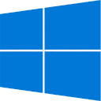

Download our launcher
Betacraft Launcher preserves legacy Minecraft versions, making them playable and functional in modern times.
Betacraft Launcher v1
Made in Java, supports versions up to 1.5.2.
Java Runtime Environment est requis.
| Windows : 1 | Télécharger |
| Arch Linux : 2 | Instructions |
| Linux : 3 | Télécharger |
| macOS : 4 | Télécharger |
- Windows x86-32 ou x86-64, au moins Windows XP.
- Arch Linux x86-64.
- Any OS with Linux kernel x86-32 ou x86-64.
- macOS x86-32 ou x86-64, au moins Mac OS X 10.7.
Installer
Betacraft Launcher v2 (alpha)
Développé en C++, compatible avec les versions jusqu'à 1.12.2.
En phase alpha, des bugs et des changements rapides sont à prévoir.
 Windows : 1 |
x86|64 | aarch64 |
| Linux : 2 | x86|64 | aarch64 |
| macOS : 3 | x86|64 | aarch64 |
- Windows x86-64, au moins Windows 10 build 1809.
- Indisponible sur Linux pour le moment.
- macOS x86-64 ou aarch64, au moins macOS 13.0.
LegacyFix
L'élément essentiel qui fait la qualité de Betacraft Launcher.
Installable pour Prism Launcher et les instances MultiMC.
| Prism Launcher : | Instructions |
| MultiMC : | Instructions |
| LegacyFix jar : | Télécharger |